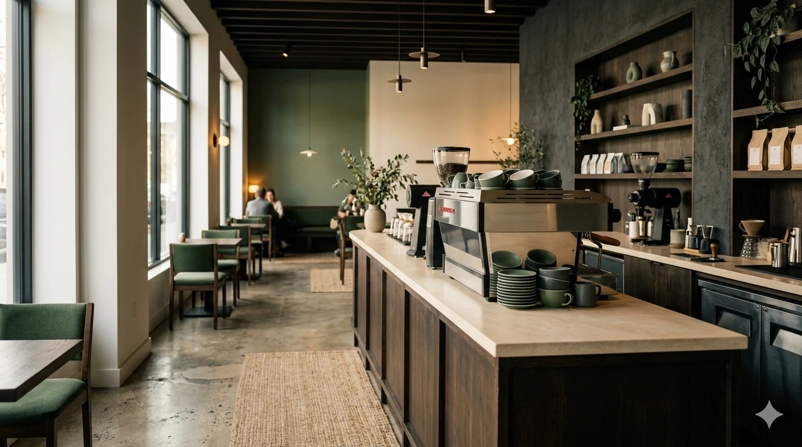

NOIRÉ / Our Story
Our Story
From the first roast to the first regular, we built NOIRÉ around people, craft, and time.

THE BEGINNING
A neighborhood ritual, made by hand.
NOIRÉ began as a tiny counter with six seats and a stubborn belief that coffee deserves patience. Today, the room is bigger, but the idea is the same: source carefully, prepare simply, and make space for people to slow down.
2019First roast, first menu, first morning.
2022Our bakery program starts with local makers.
2026A familiar room for a new generation of coffee lovers.